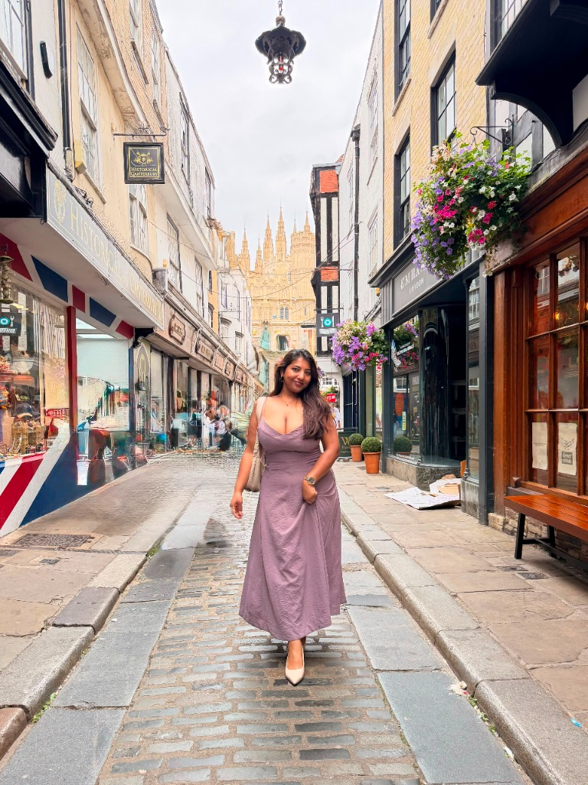
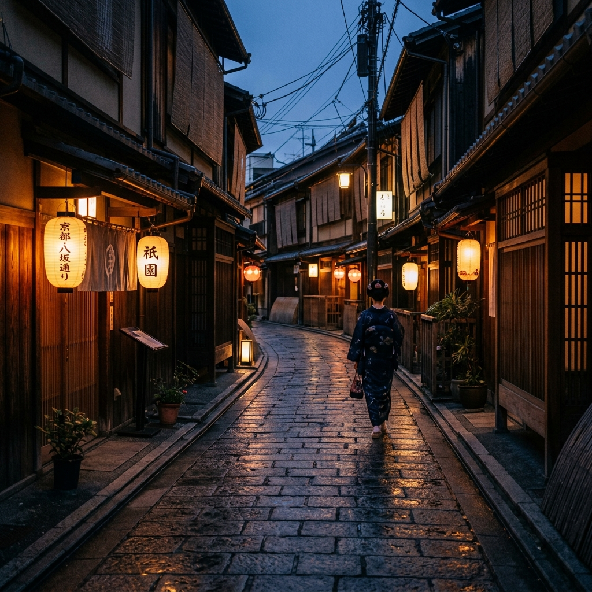
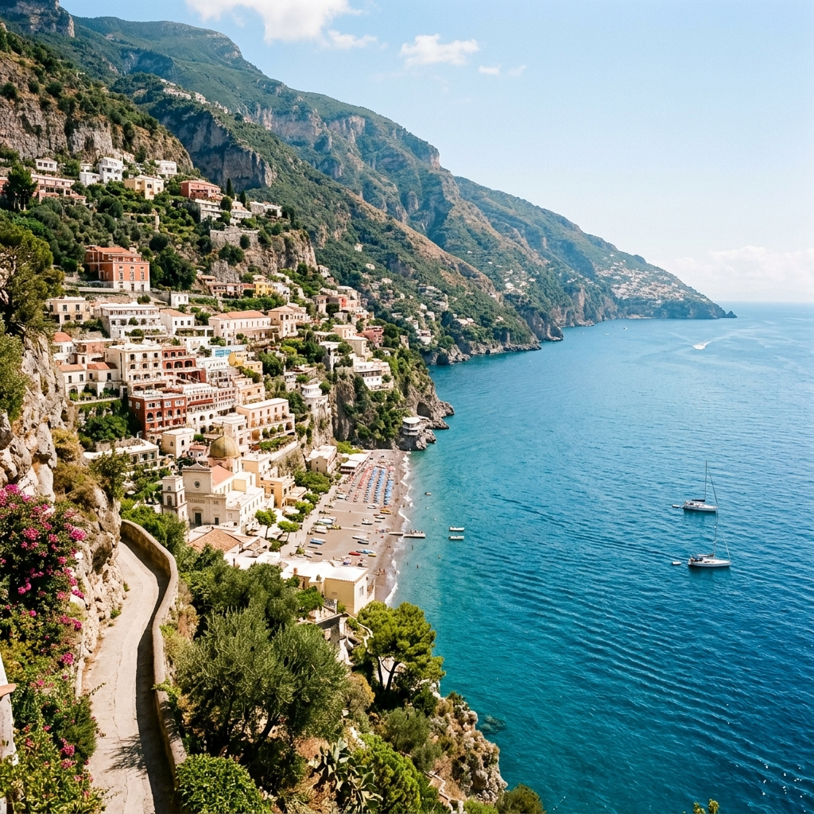

"Chasing sunsets & new cities. Travel • Lifestyle • Fashion"
Recent Destinations


How a Story is Made
Seeking the Silent Places
Before planning a journey, I research the lesser-known, quiet spots where history, culture, and nature intersect. I look for the visual stories that standard tourist itineraries overlook.
Visual Journaling
Upon arrival, I spend the first hours with a physical journal—taking note of light shifts, scent profiles, color combinations, and hand-sketching layout layouts.
Camera & Ink
Using high-resolution cameras and analog diary notes, I record the scenery. The focus is always on natural, soft shadows, human scale, and realistic color palettes.
Curated Stories
The final step is translating these sensory fragments into cohesive lifestyle features, high-impact social media guides, and rich photographic reels that inspire intentional travel.
Brand Partnerships
Let's Wander Together
Currently open to commercial lifestyle photography, destination feature storytelling, and sponsored social media campaigns for Autumn & Winter 2026/2027.
collab.bhumii@gmail.com